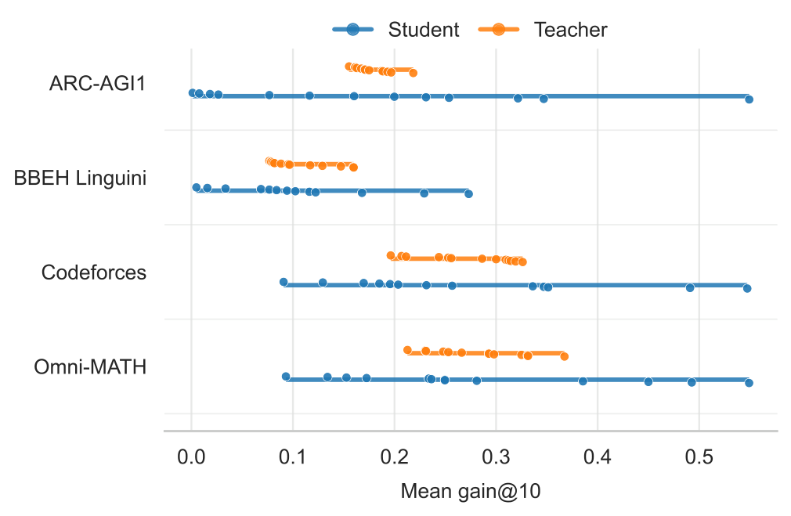
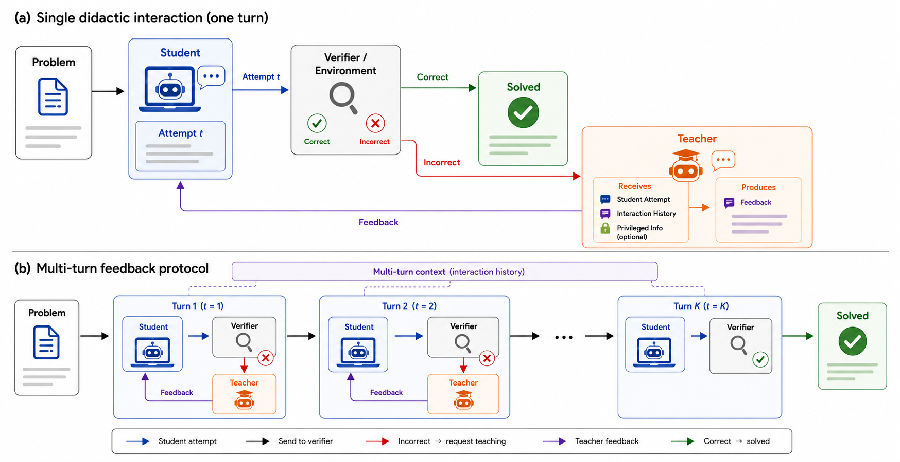
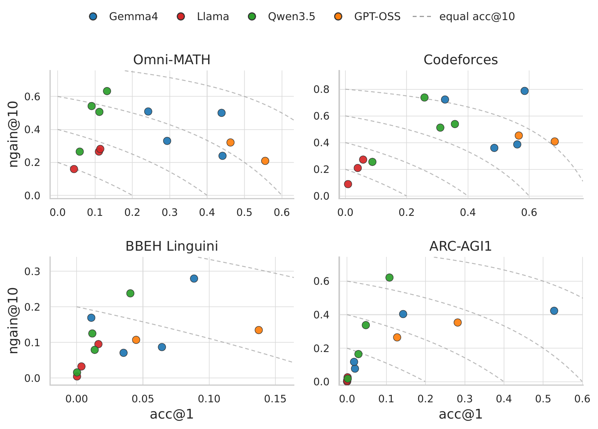
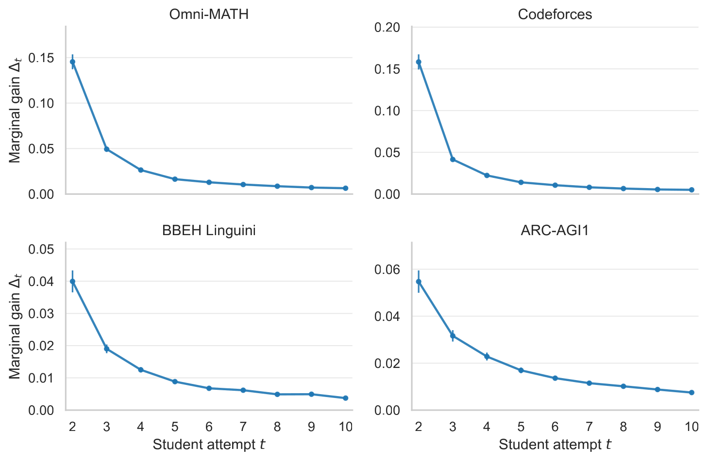
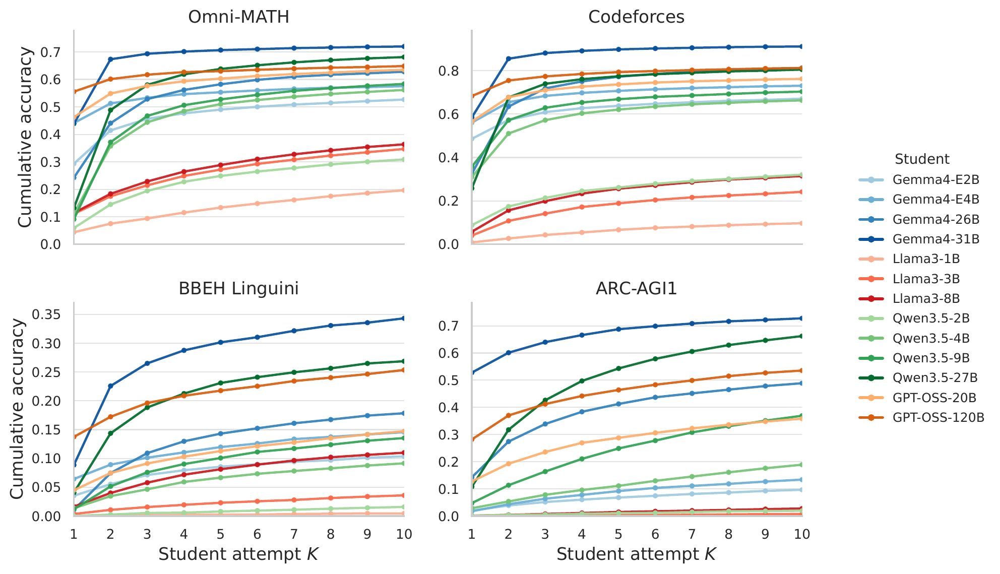
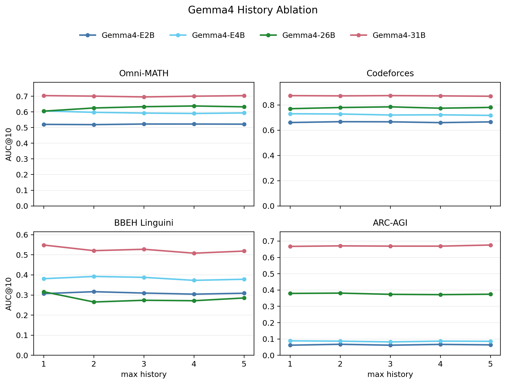
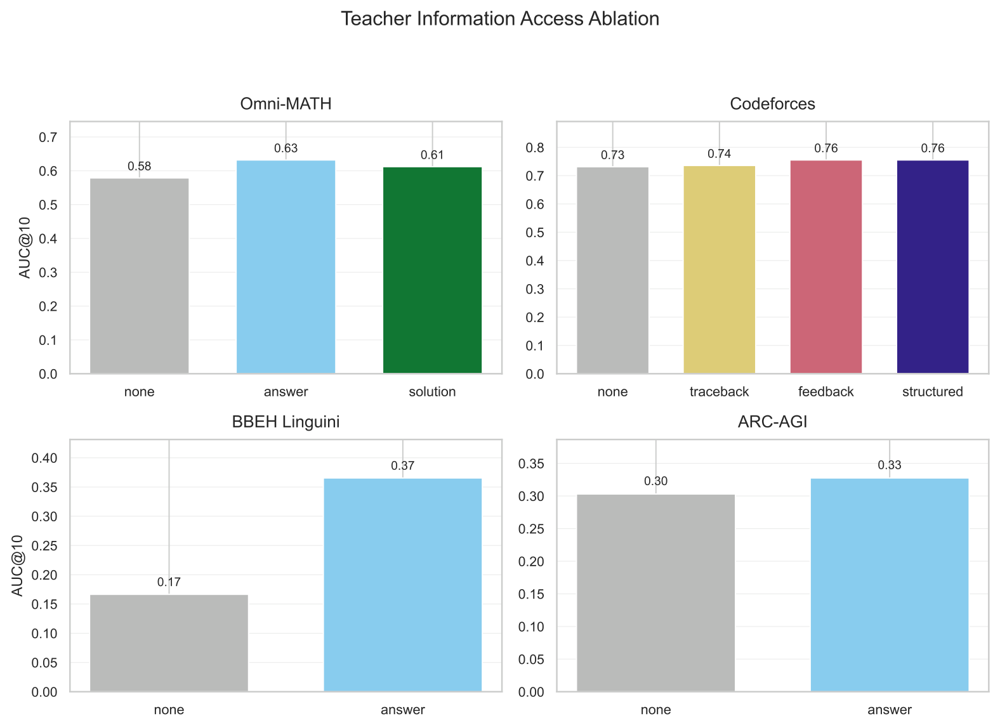

Feedback-specific gains require better-than-generic guidance.
Self-feedback is inconsistent relative to self-refinement. The best external teachers add 9.2 to 16.6 acc@10 points over self-refinement across environments.
Controlled student-teacher feedback evaluation
In multi-turn tasks, a model can get another attempt after receiving feedback. The hard question is whether it improved because the feedback was useful, or simply because it got more inference time. We isolate that difference across four verifiable reasoning environments and thirteen open-weight model families.

Interactive feedback is attractive because it resembles how people debug math solutions, programs, and plans: try, observe what failed, revise, and try again. That same loop could become a way to train models that follow instructions and recover from mistakes in context.
The missing piece is diagnostic. Most work focuses on the final student, the stronger model being distilled, or the verifier. We instead ask what happens inside the feedback step: when does a teacher's message contain information the student can actually use?
We evaluate a simple interaction: a student attempts a task, a verifier checks it, a teacher gives feedback, and the student retries from the same task. The study separates three effects that are easy to conflate.
We introduce a controlled student-teacher protocol across Omni-MATH, Codeforces, BBEH Linguini, and ARC-AGI1. We compare external feedback, self-feedback, and unguided self-refinement while varying interaction history, task difficulty, and teacher access to privileged task information.
Across settings, self-generated feedback often adds little beyond retrying from scratch, while the strongest external teachers produce substantially larger feedback-specific gains. Dense model matrices show that interactive gains are driven more by the student's ability to use feedback than by the teacher's identity.
Six targeted findings separate repeated attempts, student feedback uptake, teacher quality, history length, and privileged task information.
Self-feedback is inconsistent relative to self-refinement. The best external teachers add 9.2 to 16.6 acc@10 points over self-refinement across environments.
A strong first attempt does not guarantee strong recovery. Models with similar acc@1 can differ sharply in normalized gain from feedback.
Student fixed effects explain 77.1% to 96.5% of pair-level gain variation, while teacher identity adds only a small increment after conditioning on the student.
A teacher that solves more tasks on turn one is not always the better interactive teacher. Diagnosing the student's specific error is a separate capability.
Extra visible turns can expose repeated failures, but the completed Gemma4 ablation shows near-flat average AUC from max history 1 to 5 across the four environments.
Answer access strongly helps BBEH Linguini, barely moves ARC-AGI1, and gives moderate gains on Omni-MATH and Codeforces execution-feedback variants.
In each episode, a student attempts a task. A task-specific verifier checks the answer. If the answer is wrong, a teacher sees the latest attempt, selected interaction history, and optional privileged information, then writes natural-language feedback. The student tries again until success or the interaction budget is exhausted.

We report acc@1, acc@10, gain, normalized gain, and cumulative accuracy AUC from episode logs. The summary below separates retry, self-feedback, and best external feedback; the additional plots show the latest completed Gemma4 ablations.
| Environment | Self-refinement | Self-feedback | Best feedback |
|---|---|---|---|
| Omni-MATH | 43.9 (+20.7) | 48.6 (+24.7) | 60.5 (+36.9) |
| Codeforces | 52.8 (+17.8) | 56.9 (+23.8) | 68.7 (+35.1) |
| BBEH Linguini | 12.0 (+7.6) | 10.8 (+7.7) | 21.2 (+17.5) |
| ARC-AGI1 | 18.2 (+11.6) | 26.9 (+17.1) | 33.2 (+23.1) |





The dense 13 x 13 matrices make the role asymmetry visible: rows often dominate columns, showing that the student receiving feedback explains most interactive gain variation.
Multi-turn success is not enough evidence that feedback was useful. A controlled evaluation should compare against unguided self-refinement, measure recovery from failed first attempts, and separate the teacher's ability to diagnose from the student's ability to act on feedback.
Project page for the publication, with the paper, code, evaluation protocol, and main result figures in one place.

{kind=link}
{kind=link}
{kind=link}
{kind=link}
{kind=link}
{kind=link}
{kind=link}
{kind=link}